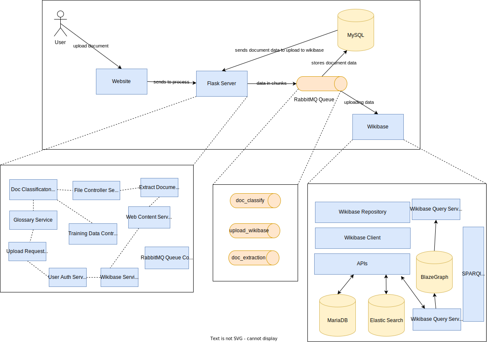
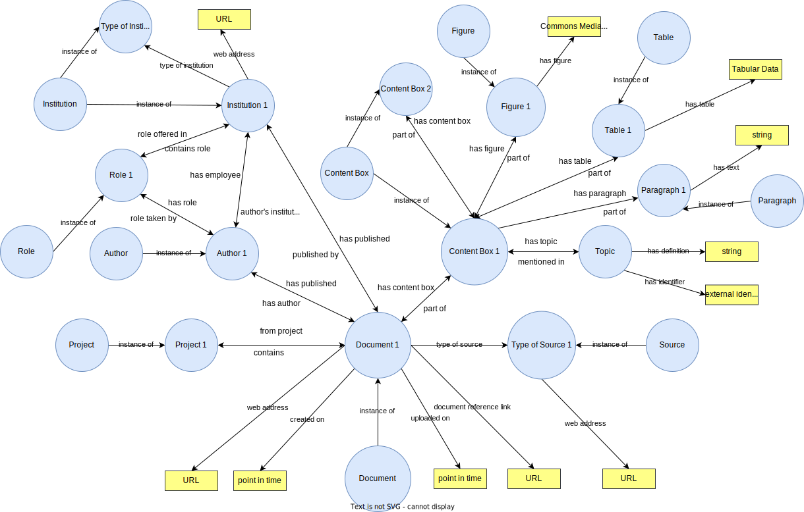
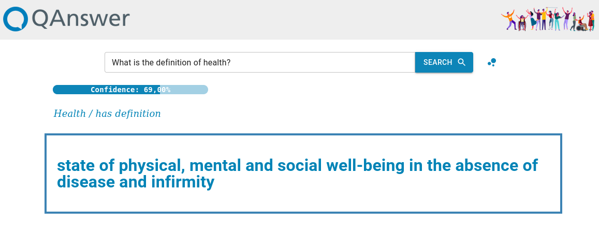
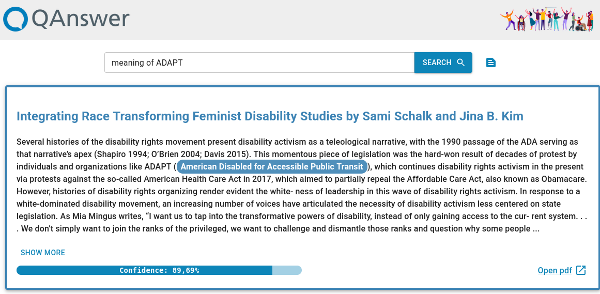
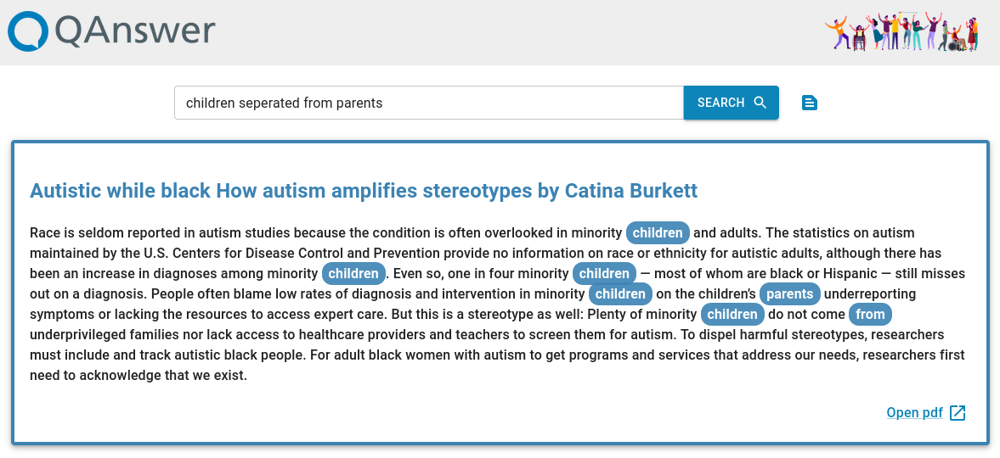

Searching for domain specific information is tough
The main focus in the work is building domain specific corpus, which can be searched and queried
efficiently
With Semantic Web, multiple tools such as Wikibase and QA systems over Knowledge Graphs have emerged
The issues are:
The queries can be on the content or the metadata. Do we need 2 different answering systems?
There are different existing search techniques. We need an evaluation for the search techniques to find what
is the best solution?
Existing Solutions
There have been existing solutions to make a domain specific searchable and answerable system.
In the paper, [1] specific information
is extracted from the document with a neural network and generate tripes from it. Although, the ontology
and the triples generated are specific to that domain and cannot be extended. In the paper, [2] they proposed a
neural
network model for building a question answering system.
There have been various solutions to present data in structured fashion in Wikibase. The paper, [3] has proposed an ontology
for wikibase but it is domain specific as well.
Research Questions
How can we have a uniform structured representation for documents of various types?
How to evaluate search for information?
Can or should we combine various search techniques for one unique solution method?
Contribution
Wikibase as Infrastructure for Documents
What is Wikibase?
A free, open source knowledge graph
It is the software behind Wikidata, one of the largest KG with 5 billion triples
It is used to build open/enterprise knowledge graphs
Why are we using Wikibase?
Excellent for people out of scope of KG to interact with structured data
Can add data by both humans and injest heterogenous data with bots
Changes can be tracked and reversed, if needed
Takes less time to setup with many features and scales up well
Wikibase as Infrastructure for Documents

Ontology for Documents

Why do we need structured data about the document and it's
meta-data in RDF?
Example Use Case
The documents we employed in the project for valorising them are in the domain of Disability Studies.
There are different types of questions that can arise, like,
Single words and definitions
Metadata of the document
Unique answer from the documents
Multiple answer from the documents
Terms from the text
Combining Various Search Techniques
Response with Structured Data

Combining Various Search Techniques
Response with Free-Text

Combining Various Search Techniques
Response with Keywords

Evaluation of Document Search
Search Techniques Experiment
We undertook a search technique experiment for searching for information in a particular domain. The information
was to be searched with 5 methods,
Searching with a PDF viewer
Searching over Wikibase
Searching over Structured Data
Elastic Search over Documents
Free-Text search over Documents
Search Techniques Experiment (Contd.)
Evaluation Techniques
We invited experimental subjects to search for information using different search
techniques. We prepared a questionnaire
for each search method which were divided into two parts,
Search Instruction Questionnaire
User Experience Questionnaire
There were 17 experimental subjects, 6 questions (5 true and 1 false) to search for and 1 UEQ questionnaire to be
filled for each search method
Search Techniques Experiment (Contd.)
Search Instruction Questionnaire
The users had to search for information in 2 minutes and note the relevancy of the
information retreived
on a scale of 1 to 7 (the higher the better), if they found an answer and the timestamp in seconds if they found
the answer.
The questions answered from this experiment is,
Did the user find an answer?
What was the time taken through each method?
Which method had the most relevant answers?
Search Techniques Experiment (Contd.)
Search Instruction Questionnaire (Contd.)
The user is expected to form his own keywords and questions to search
for the answer by reading the instructions.
We introduced a question with no answer present in the document corpus to count for false positives.
The instructions were,
No.
Instruction to User
Answer available?
1
Find text about the racism faced by black feminists
Yes
2
Find text about elitism in american womens movement
Yes
3
Find text about human rights of minors
No
4
Find text about racism in United States
Yes
5
Find text about ableism in prison
Yes
6
Find text about police violence for disabled people
Yes
Search Techniques Experiment (Contd.)
User Experience Questionnaire
The users had to fill a questionnaire explaining their user experience after
every
search method.
The questionnaire contains 26 individual items divided into 6 subscales (Attractivenness, Perspicuity,
Efficiency, Depandability, Stimulation and Novelty)
The questions answered from this experiment are,
What does the user feel about the usefullness of the method? i.e Pragmatic Value
What does the user feel about the ease of use of the method? i.e Hedonic Value
Results
Search Methods
Values of relevant answer from a search method
Results
User Experience Questionnaire
UEQ PragmaticUEQ Hedonic
Results
Discussion - Search Methods
After analysing the results from search experiments. According to the users,
Elastic search found the most relevant answers
It was followed by QAnswer RDF Search and Wikibase Search
With the question with no answer available, users found relevant answer with Elastic Search.
Results (Contd.)
Discussion - User Experience Questionnaire
After analysing the results from user experience questionnaire. According to the users,
The users found free-text over the documents to be more efficient and useful
It is followed by Elastic Search, and QAnswer Search over RDF in efficiency
Users found searching over documents with free-text search with the most ease-of-use
Users found other methods similar in ease of use
Conclusion
Conclusion
We find that as elastic search had the most relevant answers. It also provided information for instruction
with no actual answer in the document corpus
Elastic Search is not a good method as it provides users with a false sense of information
In questions we need an exact answer from, structured data is important
In the subscales of UEQ, free-text performed the best which further supports the argument of having a
definitive search system over document corpus.
Future Work
As I have 2 more weeks in my internship,
The existing ontology is the one we adjusted to our needs for the project, I will work on aligning with
existing ontologies such as Dublin Core, FOAF, LOINC, DoCO, UN Document Ontology
I will work on better methods of analysing the data generated in the evaluation of document search
We are preparing a demo paper on searching over free-text and RDF at the same time
We are also preparing a paper demonstrating wikibase as an infrastructure for valorising documents